UPI Kampus Tasikmalaya · Sistem AI Complaint
Penjelasan lengkap setiap Data Flow Diagram (Level 0, 1, 2) dan diagram UML (Use Case, Class,
Sequence) dengan bahasa sehari-hari, untuk pembaca yang tidak berlatar belakang teknik informatika.
Dokumen ini menjelaskan gambar-gambar rancangan (diagram) dari sistem pelaporan kondisi toilet kampus. Diagram adalah cara para perancang sistem menggambarkan “cara kerja” sebuah aplikasi di atas kertas, sama seperti arsitek menggambar denah sebelum membangun rumah.
Setiap diagram di sini dibuat dari sistem yang benar-benar sudah berjalan, bukan sekadar rencana. Nama proses, isi data, dan urutan langkah diambil langsung dari cara aplikasi bekerja.
Semua gambar di dokumen PDF ini berupa gambar vektor. Artinya bila diperbesar (zoom), tulisannya tetap tajam, tidak pecah. Ini berguna terutama untuk DFD Level 1 yang cukup padat.
Bayangkan seorang mahasiswa masuk ke toilet di Gedung A lantai 2 dan mendapati lantainya becek dan sabunnya habis. Di pintu ada stiker kode QR. Ia memindainya dengan ponsel, memilih “WC Pria”, menulis “lantai becek, sabun habis”, memotret kondisinya, lalu menekan kirim. Ia langsung mendapat nomor laporan untuk memantau perkembangannya.
Dalam hitungan detik, sebuah kecerdasan buatan (AI) pembaca teks membaca keluhan itu dan mengubahnya menjadi “tiket kerja” yang rapi: jenis masalahnya (genangan, perlengkapan), tingkat kepentingannya (sedang), ringkasan singkat, dan saran tindakan untuk petugas.
Seorang petugas kebersihan memindai QR yang sama, memilih namanya dari daftar, dan melihat keluhan itu di urutan atas. Setelah membersihkan, ia wajib memotret hasilnya. Foto itu diperiksa oleh AI pembaca gambar: apakah ini benar foto toilet, dan apakah sudah bersih? Hanya bila AI menilai bersih, laporan boleh ditandai selesai. Bila masih kotor, foto ditolak beserta alasannya, dan petugas diminta membersihkan ulang.
Setiap sore pukul 17.00 WIB, sistem otomatis membuat ringkasan harian: satu paragraf yang menyebut lokasi paling bermasalah dan tindakan paling mendesak hari itu. Supervisor (pengawas) memantau semuanya dari dashboard: daftar laporan, grafik, catatan kerja petugas, dan buku catatan aktivitas yang tidak bisa dihapus. Siapa pun juga bisa mengajukan pertanyaan dalam bahasa sehari-hari, seperti “gedung mana yang paling sering bermasalah bulan ini?”, dan dijawab oleh AI berdasarkan data.
Dalam diagram, “pihak yang terlibat” disebut aktor (di UML) atau entitas eksternal (di DFD). Keduanya berarti pihak di luar sistem yang memberi atau menerima data. Ada tujuh pihak:
| Pihak | Jenis | Perannya |
|---|---|---|
| Mahasiswa (Pelapor) | Manusia | Melaporkan kondisi toilet. Tidak wajib punya akun; akun hanya perlu bila ingin tampil di papan peringkat pelapor teraktif. |
| Petugas Kebersihan | Manusia | Menangani laporan dan mencatat toilet yang sudah dibersihkan. Tidak perlu login: cukup memilih namanya dari daftar yang dibuat supervisor. |
| Pengunjung Umum | Manusia | Siapa saja (dosen, tamu, mahasiswa lain) yang membuka papan laporan publik atau bertanya kepada chatbot AI. |
| Supervisor | Manusia | Pengawas. Satu-satunya yang wajib login. Memantau laporan, grafik, dan catatan; mengelola daftar petugas dan akun; menghapus laporan bila perlu. |
| LLM Teks (DeepSeek) | Layanan AI | “Otak” pembaca teks. Menggolongkan keluhan, membuat ringkasan harian, dan menjawab pertanyaan. |
| LLM Vision (Gemini) | Layanan AI | “Mata” sistem. Menilai foto bukti dari petugas: toilet atau bukan, bersih atau kotor. |
| Penjadwal (Cron) | Jam otomatis | Semacam alarm yang berbunyi setiap hari pukul 17.00 WIB untuk memicu pembuatan ringkasan harian. |
LLM (Large Language Model) adalah nama teknis untuk jenis AI yang memahami bahasa, seperti ChatGPT. Sistem ini memakai dua LLM dari perusahaan berbeda karena tugasnya berbeda: satu untuk teks, satu untuk gambar.
Dokumen ini memuat dua “keluarga” diagram. Keduanya menggambarkan sistem yang sama, tetapi dari sudut pandang yang berbeda.
Diagram aliran data. Menjawab pertanyaan: data apa berpindah dari mana ke mana, dan disimpan di mana? Bayangkan peta jalur kurir di kantor pos: siapa yang mengirim paket, meja mana yang mengolahnya, dan rak mana yang menyimpannya.
Kumpulan diagram standar untuk merancang perangkat lunak. Seperti cetak biru bangunan yang punya denah, tampak depan, dan potongan: setiap jenis diagram UML memotret sistem dari sisi berbeda (siapa memakai apa, bentuk datanya, urutan kejadian).
| Diagram | Pertanyaan yang dijawab | Analogi sehari-hari |
|---|---|---|
| DFD Level 0 | Sistem ini berhubungan dengan siapa saja? | Foto satelit sebuah kantor: kelihatan gedungnya dan siapa yang datang-pergi. |
| DFD Level 1 | Pekerjaan besar apa saja di dalam sistem? | Denah lantai: bagian-bagian kantor dan lemari arsipnya. |
| DFD Level 2 | Langkah-langkah rinci setiap pekerjaan? | Prosedur kerja (SOP) di satu meja. |
| UML Use Case | Siapa bisa melakukan apa? | Daftar layanan di papan informasi, beserta siapa yang boleh memakainya. |
| UML Class | Data apa saja yang dicatat, dan bagaimana saling berhubungan? | Contoh formulir-formulir kantor dan hubungan antar-formulir. |
| UML Sequence | Dalam satu kejadian, siapa bicara ke siapa, urutannya bagaimana? | Naskah drama: siapa berkata apa kepada siapa, baris demi baris. |
Semua DFD di dokumen ini memakai notasi Yourdon/DeMarco, salah satu gaya baku yang paling umum diajarkan. Hanya ada lima simbol:
2.0 di Level 1 dipecah
menjadi 2.1, 2.2, dan seterusnya di Level 2.D1–D7
di sekat kiri memudahkan penyebutan.4.0 di Level 1 muncul lagi di diagram Level 2 proses 4.0, tidak kurang dan tidak lebih.D3 tetap berarti satu
data store yang sama, yaitu tabel laporan. Cara ini baku dalam notasi DFD.Sistem menyimpan datanya di tujuh tempat. Enam berupa tabel di basis data, satu berupa tempat penyimpanan foto. Nama dalam kurung adalah nama tabel sebenarnya di basis data.
| Data store | Isinya | Contoh satu baris |
|---|---|---|
| D1 Pengguna (users) | Semua akun: supervisor, pelapor yang mendaftar, dan nama petugas. Kata sandi tidak disimpan apa adanya, tetapi diacak satu arah (hash) sehingga tidak bisa dibaca siapa pun. | Budi · peran: petugas · aktif |
| D2 Lokasi (buildings, toilets) | Daftar gedung dan setiap toilet: gedung, lantai, jenis (pria, wanita, disabilitas), aktif atau tidak. | A-2-MEN · Gedung A lantai 2, WC Pria |
| D3 Laporan (reports) | Setiap keluhan: teks asli, foto kondisi, status, hasil analisis AI (kategori, prioritas, ringkasan, saran), serta foto bukti dan penilaian AI atas foto itu. | “lantai becek” · genangan · prioritas sedang · status diproses |
| D4 Log Pekerjaan (work_logs) | Catatan pembersihan rutin oleh petugas (tanpa keluhan), lengkap dengan foto yang sudah dinilai bersih. | Siti membersihkan B-1-WOMEN · 08.15 |
| D5 Ringkasan Harian (daily_summaries) | Satu paragraf ringkasan per hari dan poin-poin sorotannya. | 28-09-2026 · 7 laporan · “Gedung C paling banyak…” |
| D6 Log Aktivitas (activity_log) | “Buku besar” semua kejadian penting: laporan masuk, analisis, perubahan status, foto ditolak, login, penghapusan, pertanyaan. Hanya ditambah, tidak pernah diubah. | 14.02 · Budi · status diproses → selesai |
| D7 Foto (R2 bucket) | Berkas foto: foto kondisi dari mahasiswa, foto bukti, dan foto pekerjaan dari petugas. Foto yang ditolak AI langsung dihapus. | bukti/3f2a….jpg |
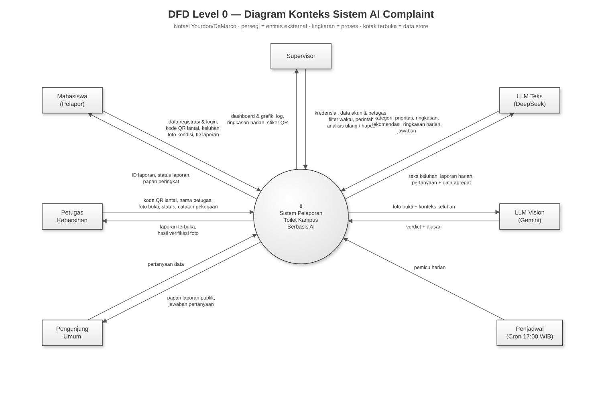
Diagram konteks adalah pandangan paling luas. Seluruh aplikasi digambar sebagai satu lingkaran saja (proses “0”), seolah-olah sebuah kotak tertutup. Yang terlihat hanyalah siapa yang berhubungan dengan sistem dan data apa yang dipertukarkan. Isi di dalam kotak sengaja belum diperlihatkan; itu tugas Level 1.
Di level ini belum ada data store, karena penyimpanan data adalah urusan di dalam sistem. Pihak manusia digambar di kiri, layanan AI dan penjadwal di kanan.
| Entitas | Data yang dikirim ke sistem | Data yang diterima dari sistem |
|---|---|---|
| Mahasiswa | Data registrasi dan login (bila ingin punya akun); kode QR lantai yang dipindai; data laporan: toilet, teks keluhan, foto kondisi; nomor laporan untuk mengecek status. | Nomor laporan setelah mengirim; status laporan (baru, diproses, selesai); papan peringkat pelapor. |
| Petugas | Kode QR lantai yang dipindai; nama petugas (dipilih dari daftar); foto bukti dan permintaan menandai selesai; catatan pekerjaan harian. | Daftar laporan yang belum selesai di lantai itu; hasil pemeriksaan foto (diterima atau ditolak beserta alasannya). |
| Pengunjung | Pertanyaan tentang data (misalnya “berapa laporan minggu ini?”). | Papan laporan publik; jawaban atas pertanyaan. |
| Supervisor | Nama pengguna dan kata sandi; data akun dan petugas baru; filter waktu; perintah analisis ulang atau hapus laporan. | Dashboard laporan dan grafik; log pekerjaan dan log aktivitas; ringkasan harian; stiker QR siap cetak. |
| LLM Teks | Hasil kerjanya: kategori, prioritas, ringkasan, rekomendasi; paragraf ringkasan harian; jawaban pertanyaan. | Teks keluhan; daftar ringkasan laporan hari itu; pertanyaan beserta data rekap. |
| LLM Vision | Penilaian foto (bersih, kotor, atau bukan toilet) dan alasannya. | Foto bukti beserta konteks keluhannya. |
| Penjadwal | Sinyal pemicu setiap pukul 17.00 WIB. | (tidak menerima apa pun) |
Level 1 “membuka tutup” kotak di Level 0. Proses tunggal “0” dipecah menjadi sembilan proses, dan ketujuh data store mulai terlihat. Semua entitas dan aliran dari Level 0 tetap ada; sekarang terlihat proses mana yang menanganinya.
Hampir semua proses membaca atau menulis D3 Laporan, jantung sistem ini. Supaya garis tidak bersilangan, diagram memakai salinan simbol (lihat Bagian 5): setiap proses digambar bersama data store dan entitas yang dipakainya, seperti “meja kerja” masing-masing. Diagram ditampilkan di halaman berikut pada kertas A3 mendatar. Perbesar tampilan PDF bila perlu; gambar tetap tajam.
Cara membaca susunannya, dari atas ke bawah:
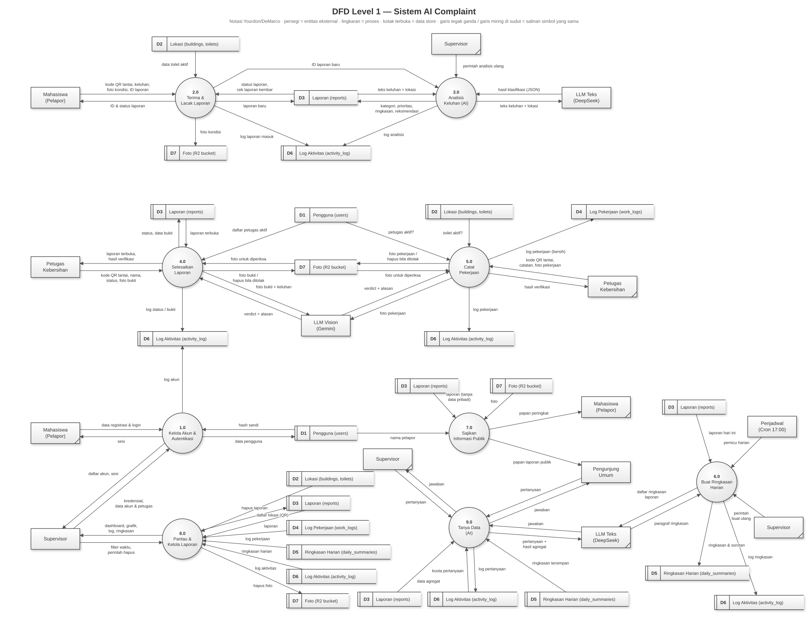
Gambar 2. DFD Level 1: sembilan proses, tujuh data store. Simbol bergaris tegak ganda atau bergaris miring di sudut adalah salinan.
| Proses | Apa yang dikerjakan | Data store yang dipakai |
|---|---|---|
| 1.0 Kelola Akun & Autentikasi | Pendaftaran akun pelapor, pemeriksaan login, pembuatan “tiket masuk” (sesi), serta pengelolaan akun dan daftar petugas oleh supervisor. | D1 (baca & tulis), D6 |
| 2.0 Terima & Lacak Laporan | Menampilkan pilihan toilet setelah QR dipindai, menerima foto dan keluhan, memeriksa kelengkapan, menyimpan laporan, dan menjawab pertanyaan “laporan saya sudah sampai mana?”. | D2 (baca), D3, D7, D6 |
| 3.0 Analisis Keluhan (AI) | Mengirim teks keluhan ke LLM Teks dan menyimpan hasilnya: kategori, prioritas, ringkasan, saran tindakan. Berjalan di belakang layar, sehingga mahasiswa tidak perlu menunggu. | D3 (baca & tulis), D6 |
| 4.0 Selesaikan Laporan | Menampilkan laporan terbuka kepada petugas, menerima foto bukti, meminta LLM Vision menilainya, dan mengubah status hanya bila foto dinilai bersih. | D1, D3, D7, D6 |
| 5.0 Catat Pekerjaan | Mencatat pembersihan rutin (tanpa keluhan) dengan foto yang juga diperiksa AI. | D1, D2, D4, D7, D6 |
| 6.0 Buat Ringkasan Harian | Setiap pukul 17.00, atau saat supervisor meminta, mengumpulkan laporan hari itu dan meminta LLM Teks menyusun satu paragraf ringkasan. | D3 (baca), D5, D6 |
| 7.0 Sajikan Informasi Publik | Menampilkan papan laporan untuk umum (tanpa data pribadi), papan peringkat pelapor, dan foto. | D1, D3, D7 (semua baca) |
| 8.0 Pantau & Kelola Laporan | Dashboard supervisor: daftar laporan, grafik, log, penghapusan laporan, dan pembuatan stiker QR. | D2–D7 |
| 9.0 Tanya Data (AI) | Menerima pertanyaan bebas, meminta LLM Teks memilih rekap data yang dibutuhkan, menjalankan rekap itu, lalu mengirim jawabannya. | D3, D5, D6 |
Setiap proses di Level 1 dipecah lagi menjadi langkah-langkah yang lebih kecil. Nomor sub-proses mengikuti induknya: proses 4.0 dipecah menjadi 4.1, 4.2, 4.3, 4.4. Diagram Level 2 hanya menampilkan entitas dan data store yang berhubungan dengan proses itu, sehingga jauh lebih mudah dibaca daripada Level 1.
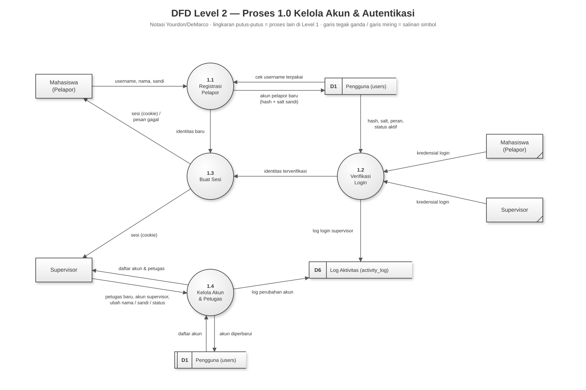
Proses ini mengurus siapa boleh masuk dan siapa terdaftar. Petugas kebersihan tidak pernah login; nama mereka hanya didaftarkan oleh supervisor, lalu dipilih dari daftar saat bekerja.
| Sub-proses | Penjelasan | Masuk | Keluar |
|---|---|---|---|
| 1.1 Registrasi Pelapor | Mahasiswa mengisi nama pengguna, nama, dan kata sandi (minimal 8 karakter). Sistem memastikan nama pengguna belum dipakai, lalu menyimpan akun dengan kata sandi yang sudah diacak. Pendaftaran mandiri selalu menghasilkan akun pelapor, tidak pernah supervisor. | Data pendaftaran (Mahasiswa); cek nama pengguna (D1) | Akun baru (D1); identitas baru (1.3) |
| 1.2 Verifikasi Login | Mencocokkan kata sandi dengan versi acaknya di D1. Akun nonaktif dan akun petugas ditolak. “Nama tidak dikenal” dan “kata sandi salah” sengaja diberi pesan yang sama, supaya orang iseng tidak bisa menebak nama pengguna mana yang ada. Login supervisor dicatat di D6. | Kredensial (Mahasiswa, Supervisor); data akun (D1) | Identitas terverifikasi (1.3); log login (D6) |
| 1.3 Buat Sesi | Memberi “tiket masuk” berupa cookie bertanda tangan digital, sehingga pengguna tidak perlu login ulang setiap membuka halaman. Tanda tangan itu mencegah orang memalsukan tiketnya. | Identitas (1.1, 1.2) | Sesi (Mahasiswa, Supervisor) |
| 1.4 Kelola Akun & Petugas | Supervisor menambah nama petugas atau akun supervisor lain, mengganti nama, mengganti kata sandi, atau menonaktifkan akun. Dua pengaman: supervisor tidak bisa menonaktifkan akunnya sendiri (agar tidak terkunci), dan petugas tidak bisa diberi kata sandi. Setiap perubahan dicatat di D6. | Perintah (Supervisor); daftar akun (D1) | Akun diperbarui (D1); daftar akun (Supervisor); log (D6) |
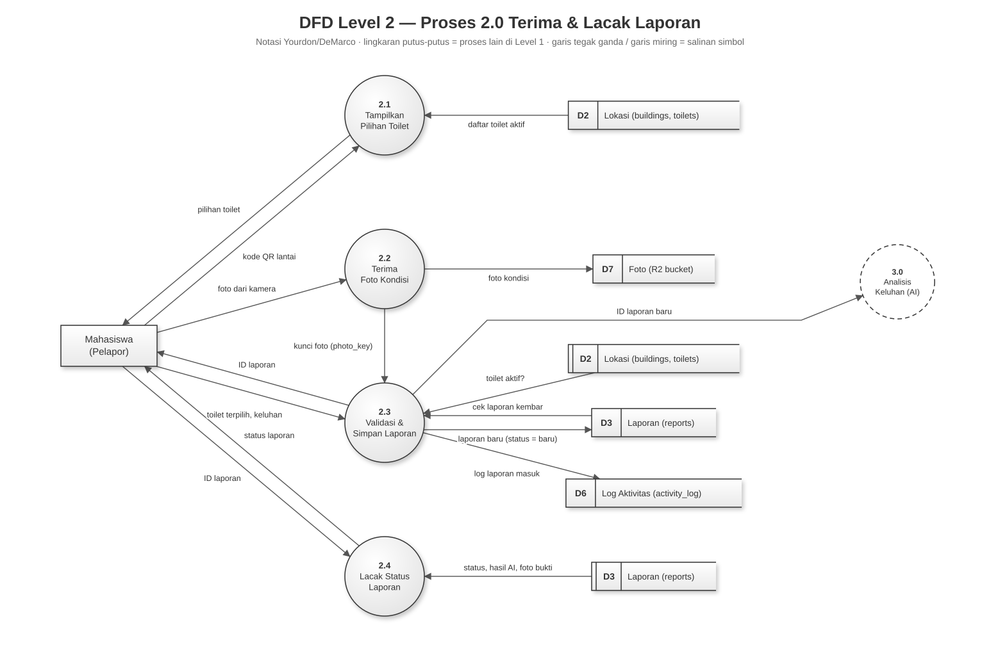
Inilah pintu masuk semua keluhan. Foto dikirim lebih dulu, baru kemudian keluhannya. Dengan begitu laporan yang tersimpan selalu sudah punya foto.
| Sub-proses | Penjelasan | Masuk | Keluar |
|---|---|---|---|
| 2.1 Tampilkan Pilihan Toilet | Satu stiker QR mewakili satu lantai, bukan satu toilet. Setelah QR dipindai, sistem menampilkan toilet aktif di lantai itu (pria, wanita, disabilitas) untuk dipilih. | Kode QR (Mahasiswa); daftar toilet (D2) | Pilihan toilet (Mahasiswa) |
| 2.2 Terima Foto Kondisi | Foto diambil langsung dari kamera, tidak bisa dari galeri, supaya tidak ada foto lama. Sistem hanya menerima JPG, PNG, atau WebP maksimal 5 MB, menyimpannya di D7, dan mengembalikan “kunci” untuk foto itu. | Foto (Mahasiswa) | Foto (D7); kunci foto (2.3) |
| 2.3 Validasi & Simpan Laporan | Memeriksa toiletnya memang ada dan aktif, lalu memeriksa laporan kembar: bila keluhan yang sama persis untuk toilet yang sama sudah masuk dalam 2 menit terakhir (misalnya tombol kirim tertekan dua kali), laporan lama yang dipakai. Bila bukan kembar, laporan disimpan dengan status baru, dicatat di D6, nomornya dikirim ke mahasiswa, dan proses 3.0 diberi tahu. | Toilet & keluhan (Mahasiswa); kunci foto (2.2); D2; D3 | Laporan (D3); log (D6); ID laporan (Mahasiswa, 3.0) |
| 2.4 Lacak Status Laporan | Dengan nomor laporan, siapa pun bisa melihat perkembangannya: status, hasil analisis AI, dan foto bukti bila sudah selesai. Pelapor yang punya akun juga bisa melihat daftar semua laporannya. | ID laporan (Mahasiswa); data laporan (D3) | Status (Mahasiswa) |
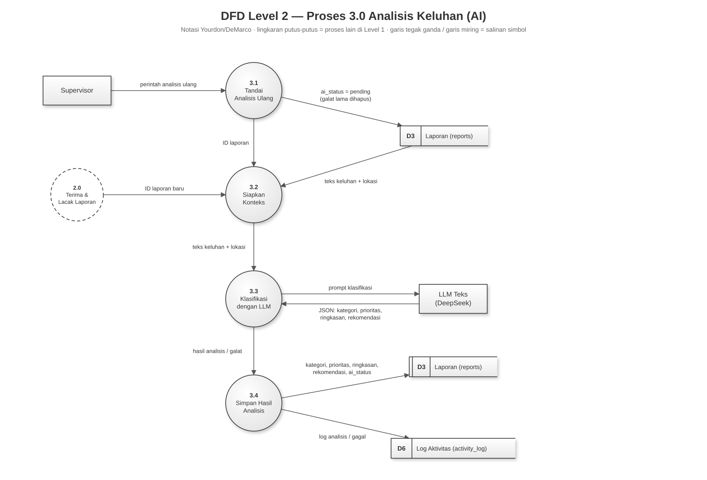
Inilah bagian yang membuat keluhan bebas seperti “wc nya bau bgt, air ga ngalir” menjadi tiket kerja rapi. Semuanya berjalan otomatis setelah laporan tersimpan.
| Sub-proses | Penjelasan | Masuk | Keluar |
|---|---|---|---|
| 3.1 Tandai Analisis Ulang | Bila analisis sebelumnya gagal (misalnya layanan AI sedang sibuk), supervisor bisa menekan tombol analisis ulang. Status analisis dikembalikan ke “menunggu” dan pesan kesalahan lama dihapus. | Perintah (Supervisor) | Status menunggu (D3); ID laporan (3.2) |
| 3.2 Siapkan Konteks | Mengambil teks keluhan dan nama lokasinya (misalnya “WC Pria – Lantai 2, Gedung A”) sebagai bahan untuk AI. | ID laporan (2.0 atau 3.1); teks & lokasi (D3) | Teks + lokasi (3.3) |
| 3.3 Klasifikasi dengan LLM | Mengirim teks ke LLM Teks beserta aturan penilaian. AI menjawab dalam format terstruktur: kategori (kebersihan, perlengkapan, kerusakan, bau, genangan, lainnya; boleh lebih dari satu), prioritas (rendah, sedang, tinggi, ditentukan oleh risiko keselamatan, bukan jumlah kata), ringkasan netral, dan rekomendasi tindakan. | Teks + lokasi (3.2); hasil (LLM Teks) | Prompt (LLM Teks); hasil atau galat (3.4) |
| 3.4 Simpan Hasil Analisis | Bila berhasil, hasil disimpan dan status analisis menjadi “ok”. Bila gagal, laporan tidak hilang: status analisis menjadi “gagal”, laporan tetap tampil tanpa label, dan bisa dianalisis ulang lewat 3.1. Keduanya dicatat di D6. | Hasil / galat (3.3) | Hasil analisis (D3); log (D6) |
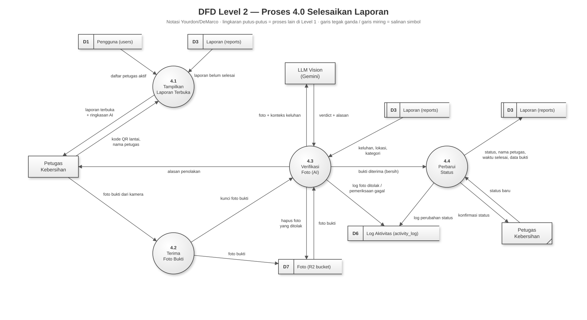
Proses ini memegang aturan terpenting sistem: laporan hanya boleh selesai bila ada foto bukti yang dinilai bersih oleh AI.
| Sub-proses | Penjelasan | Masuk | Keluar |
|---|---|---|---|
| 4.1 Tampilkan Laporan Terbuka | Petugas memindai stiker QR lantai yang sama dengan yang dipakai mahasiswa, lalu memilih namanya dari daftar petugas aktif (ponselnya akan mengingat nama itu). Sistem menampilkan laporan yang belum selesai di lantai itu, yang paling mendesak di atas, lengkap dengan ringkasan dan saran dari AI. | Kode QR lantai & nama (Petugas); D1; D3 | Laporan terbuka (Petugas) |
| 4.2 Terima Foto Bukti | Setelah membersihkan, petugas memotret toilet dengan kamera. Foto disimpan di folder khusus “bukti”. Foto kondisi dari mahasiswa tidak bisa dipakai ulang sebagai bukti. | Foto (Petugas) | Foto (D7); kunci foto (4.3) |
| 4.3 Verifikasi Foto (AI) | Foto dikirim ke LLM Vision bersama keluhan aslinya. Ada tiga kemungkinan hasil:
| Kunci (4.2); foto (D7); keluhan (D3); penilaian (LLM Vision) | Foto + konteks (LLM Vision); hapus foto (D7); log (D6); alasan (Petugas); bukti diterima (4.4) |
| 4.4 Perbarui Status | Status bisa berubah dari baru ke diproses (saat petugas menekan “Saya kerjakan sekarang”) dan ke selesai. Perubahan ke selesai diperiksa sekali lagi: harus ada foto bukti yang dinilai bersih. Nama petugas, waktu selesai, dan data bukti disimpan, lalu dicatat di D6. | Status baru (Petugas); bukti (4.3) | Status & bukti (D3); log (D6); konfirmasi (Petugas) |
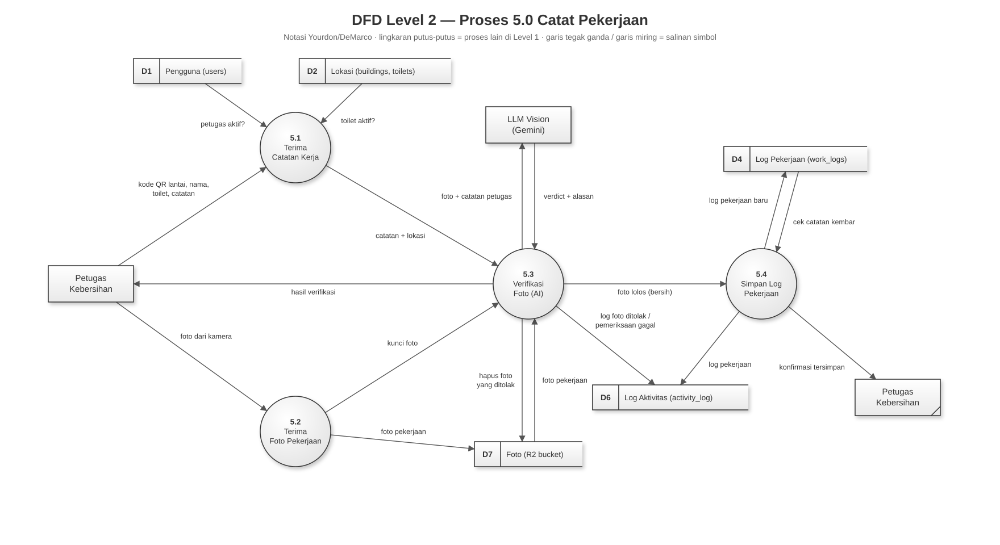
Tidak semua pembersihan berawal dari keluhan. Proses ini mencatat kerja rutin petugas, misalnya pembersihan pagi, dengan aturan yang sama ketatnya: harus ada foto yang dinilai bersih.
| Sub-proses | Penjelasan | Masuk | Keluar |
|---|---|---|---|
| 5.1 Terima Catatan Kerja | Petugas memindai stiker QR lantai, memilih toilet, dan menulis apa yang dikerjakan dengan kata-katanya sendiri. Sistem memastikan nama petugas dan toiletnya masih aktif. | Kode QR lantai, nama, toilet, catatan (Petugas); D1; D2 | Catatan + lokasi (5.3) |
| 5.2 Terima Foto Pekerjaan | Foto dari kamera disimpan di folder “kerja”. | Foto (Petugas) | Foto (D7); kunci (5.3) |
| 5.3 Verifikasi Foto (AI) | Sama seperti 4.3, tetapi konteks yang dikirim ke AI adalah catatan petugas (karena tidak ada keluhan). Foto yang ditolak dihapus dan tidak pernah disimpan sebagai log pekerjaan. | Kunci; foto (D7); penilaian (LLM Vision) | Hasil (Petugas); hapus foto (D7); log (D6); foto lolos (5.4) |
| 5.4 Simpan Log Pekerjaan | Mencegah catatan ganda akibat tombol tertekan dua kali, lalu menyimpan log pekerjaan. Karena foto yang ditolak tidak pernah sampai ke sini, setiap log di D4 pasti bernilai “bersih”. | Foto lolos (5.3); cek kembar (D4) | Log baru (D4); log (D6); konfirmasi (Petugas) |
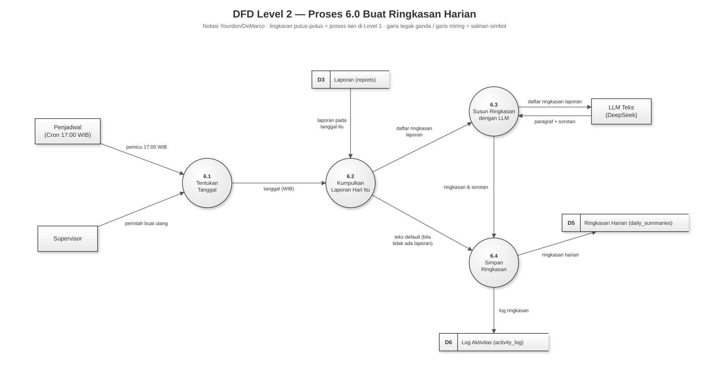
| Sub-proses | Penjelasan | Masuk | Keluar |
|---|---|---|---|
| 6.1 Tentukan Tanggal | Dipicu oleh penjadwal setiap pukul 17.00 WIB, atau oleh supervisor yang menekan tombol “buat ulang”. Tanggal dihitung dalam zona waktu WIB. | Pemicu (Penjadwal); perintah (Supervisor) | Tanggal (6.2) |
| 6.2 Kumpulkan Laporan Hari Itu | Mengambil semua laporan pada tanggal itu. Bila tidak ada satu pun, AI tidak dipanggil (hemat biaya); langsung dipakai kalimat “Tidak ada keluhan yang masuk pada hari ini.” | Tanggal (6.1); laporan (D3) | Daftar laporan (6.3) atau teks default (6.4) |
| 6.3 Susun Ringkasan dengan LLM | LLM Teks membaca daftar ringkasan laporan dan menulis satu paragraf yang menyebut lokasi terburuk dan tindakan paling mendesak, beserta beberapa poin sorotan. | Daftar laporan (6.2); hasil (LLM Teks) | Ringkasan (6.4) |
| 6.4 Simpan Ringkasan | Menyimpan ringkasan ke D5. Bila ringkasan hari itu sudah ada, ringkasan lama ditimpa. Dicatat di D6. | Ringkasan (6.2 atau 6.3) | Ringkasan harian (D5); log (D6) |
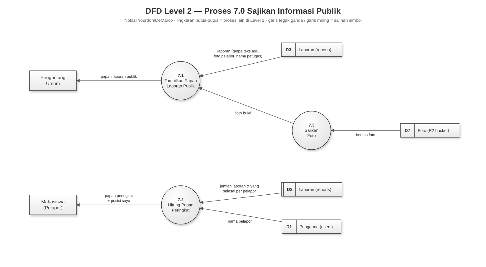
Proses ini melayani halaman-halaman yang terbuka tanpa login. Seluruh alirannya hanya membaca data; tidak ada yang ditulis.
| Sub-proses | Penjelasan | Masuk | Keluar |
|---|---|---|---|
| 7.1 Tampilkan Papan Laporan Publik | Menampilkan laporan kepada umum dengan menyaring data pribadi: teks asli keluhan, foto dari pelapor, dan nama petugas tidak ditampilkan. Yang tampil adalah lokasi, kategori, status, ringkasan, dan foto bukti yang sudah diverifikasi, karena foto itulah yang membuktikan pekerjaan benar-benar selesai. | Laporan tersaring (D3); foto bukti (7.3) | Papan laporan (Pengunjung) |
| 7.2 Hitung Papan Peringkat | Menghitung 20 pelapor terdaftar dengan laporan terbanyak, beserta berapa laporannya yang sudah selesai. Pelapor yang login juga melihat posisinya sendiri. | Jumlah laporan (D3); nama pelapor (D1) | Papan peringkat (Mahasiswa) |
| 7.3 Sajikan Foto | Mengirim berkas foto dari D7 lewat aplikasi sendiri, bukan lewat alamat penyimpanan luar. Alasannya: sebagian penyedia internet di Indonesia memblokir alamat penyimpanan itu, sehingga foto bisa gagal tampil di jaringan kampus. | Berkas foto (D7) | Foto (7.1) |
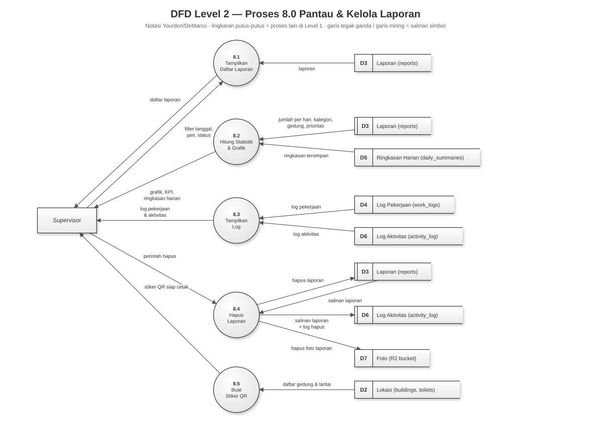
| Sub-proses | Penjelasan | Masuk | Keluar |
|---|---|---|---|
| 8.1 Tampilkan Daftar Laporan | Menampilkan semua laporan dengan waktu masuk dan waktu selesai yang tepat. Bisa disaring menurut rentang tanggal, rentang jam (WIB), dan status. | Filter (Supervisor); laporan (D3) | Daftar laporan (Supervisor) |
| 8.2 Hitung Statistik & Grafik | Menghitung angka-angka ringkas dan grafik: jumlah laporan per hari, sebaran prioritas, kategori terbanyak, gedung terbanyak, rata-rata waktu penyelesaian, dan tren dibanding periode sebelumnya. Hari tanpa laporan diisi angka nol, bukan dilewati, supaya grafik tidak menyesatkan. | Laporan (D3); ringkasan (D5) | Grafik, KPI, ringkasan (Supervisor) |
| 8.3 Tampilkan Log | Menampilkan log pekerjaan petugas (D4) dan buku catatan aktivitas (D6), sehingga supervisor tahu siapa melakukan apa dan kapan. | D4; D6 | Log (Supervisor) |
| 8.4 Hapus Laporan | Satu-satunya tindakan yang benar-benar menghapus data. Karena itu, salinan lengkap laporan disimpan dulu ke D6 sebelum laporannya dihapus dari D3 dan fotonya dari D7. Pimpinan tetap bisa melihat laporan yang hilang dan siapa yang menghapusnya. | Perintah (Supervisor); salinan (D3) | Salinan + log (D6); hapus (D3, D7) |
| 8.5 Buat Stiker QR | Membuat stiker QR siap cetak untuk setiap lantai yang punya toilet, dari daftar gedung dan lantai. Stiker ini ditempel di tiap lantai dan menjadi pintu masuk sistem: mahasiswa memindainya untuk melapor, petugas memindainya untuk menyelesaikan laporan dan mencatat pekerjaan harian (proses 2.1, 4.1, 5.1). Halaman stiker terletak di beranda; yang mencetak dan menempelnya adalah supervisor. | Daftar lokasi (D2) | Stiker QR (Supervisor) |
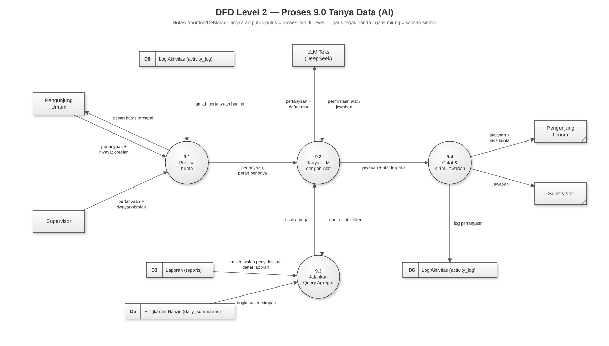
Fitur ini seperti bertanya kepada seorang analis data. Yang menarik adalah AI tidak pernah melihat data mentah. AI hanya boleh “meminta” rekap tertentu (misalnya “hitung laporan per gedung bulan ini”), lalu sistem sendiri yang menghitungnya dan mengembalikan angkanya.
| Sub-proses | Penjelasan | Masuk | Keluar |
|---|---|---|---|
| 9.1 Periksa Kuota | Untuk membatasi biaya, ada batas 50 pertanyaan per hari untuk semua orang bersama-sama, dan 20 per perangkat untuk penanya umum. Hitungannya diambil dari catatan pertanyaan di D6. Bila batas tercapai, penanya diberi tahu. | Pertanyaan (Pengunjung, Supervisor); jumlah hari ini (D6) | Pesan batas (Pengunjung); pertanyaan (9.2) |
| 9.2 Tanya LLM dengan Alat | Pertanyaan dikirim ke LLM Teks bersama daftar “alat” yang boleh dipakainya: hitung laporan, waktu penyelesaian, daftar laporan (maks. 15), dan ringkasan harian. AI memilih alat, sistem menjalankannya (9.3), hasilnya dikembalikan ke AI, lalu AI menyusun jawaban 2–5 kalimat. | Pertanyaan (9.1); permintaan alat & jawaban (LLM Teks); hasil rekap (9.3) | Pertanyaan + alat (LLM Teks); nama alat (9.3); jawaban (9.4) |
| 9.3 Jalankan Query Agregat | Menjalankan rekap yang diminta. Pengaman privasi: rekap per nama petugas hanya boleh untuk supervisor; untuk penanya umum permintaan itu ditolak, bahkan bila AI memintanya. | Nama alat & filter (9.2); D3; D5 | Hasil rekap (9.2) |
| 9.4 Catat & Kirim Jawaban | Mencatat pertanyaan di D6 (termasuk alat yang dipakai), lalu mengirim jawaban beserta sisa kuota hari itu. | Jawaban (9.2) | Log (D6); jawaban (Pengunjung, Supervisor) |
Kalau DFD berfokus pada data yang mengalir, UML berfokus pada bagaimana sistem dirancang. Dokumen ini memuat tiga jenis diagram UML, masing-masing untuk pertanyaan yang berbeda:
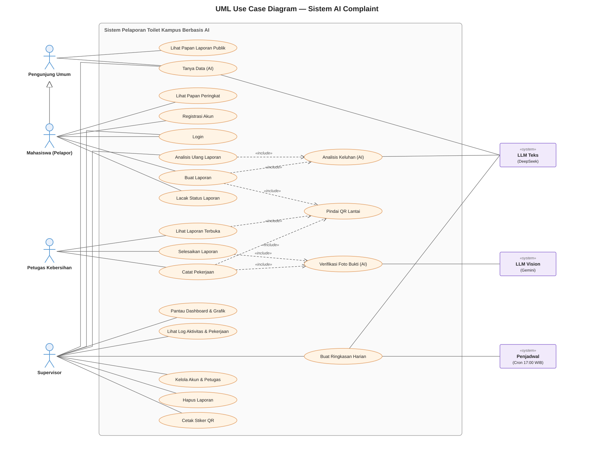
| Simbol | Arti |
|---|---|
| Orang-orangan (stick figure) | Aktor manusia: orang yang memakai sistem. |
| Kotak ungu bertanda «system» | Aktor sistem: sistem lain yang ikut terlibat, yaitu kedua layanan AI dan penjadwal. |
| Kotak besar abu-abu | Batas sistem. Semua yang di dalamnya adalah fitur aplikasi ini. |
| Elips (oval) | Use case: satu fitur atau tujuan yang bisa dicapai pengguna, ditulis sebagai kata kerja (“Buat Laporan”). |
| Garis polos | Asosiasi: aktor ini memakai atau terlibat dalam fitur ini. |
| Panah putus-putus «include» | Fitur di pangkal panah selalu menjalankan fitur di ujung panah. Contoh: setiap “Buat Laporan” pasti diawali “Pindai QR Lantai” dan diikuti “Analisis Keluhan (AI)”. |
| Panah dengan segitiga kosong | Generalisasi (pewarisan). Panah dari Mahasiswa ke Pengunjung Umum berarti mahasiswa adalah juga pengunjung, sehingga bisa melakukan semua yang bisa dilakukan pengunjung. |
| Aktor | Use case | Penjelasan |
|---|---|---|
| Pengunjung Umum | Lihat Papan Laporan Publik | Melihat laporan dan statusnya tanpa login. Data pribadi disaring. |
| Tanya Data (AI) | Bertanya dalam bahasa sehari-hari; dijawab AI berdasarkan rekap data. | |
| Mahasiswa (Pelapor) + semua fitur Pengunjung | Lihat Papan Peringkat | Melihat pelapor teraktif dan posisinya sendiri. |
| Registrasi Akun | Opsional; hanya perlu bila ingin masuk papan peringkat. | |
| Login | Masuk dengan akun yang sudah didaftarkan. | |
| Buat Laporan | Pilih toilet, tulis keluhan, foto, kirim. Selalu diawali Pindai QR Lantai dan selalu memicu Analisis Keluhan (AI). | |
| Lacak Status Laporan | Memantau laporan dengan nomornya. | |
| Petugas Kebersihan | Lihat Laporan Terbuka | Diawali Pindai QR Lantai. Menampilkan daftar keluhan di lantai itu, urut dari yang paling mendesak. |
| Selesaikan Laporan | Mengubah status dengan foto bukti. Selalu memicu Verifikasi Foto Bukti (AI). | |
| Catat Pekerjaan | Mencatat pekerjaan kebersihan harian. Diawali Pindai QR Lantai dan selalu memicu Verifikasi Foto Bukti (AI). | |
| (di-include) | Pindai QR Lantai | Memindai stiker QR di lantai toilet. Tidak berdiri sendiri: selalu menjadi langkah pertama Buat Laporan (mahasiswa), serta Lihat Laporan Terbuka dan Catat Pekerjaan (petugas). |
| Supervisor | Login | Wajib untuk masuk dashboard. |
| Tanya Data (AI) | Sama seperti pengunjung, tetapi boleh bertanya soal kinerja petugas per nama. | |
| Analisis Ulang Laporan | Mengulang analisis yang gagal. Menjalankan Analisis Keluhan (AI). | |
| Buat Ringkasan Harian | Membuat ulang ringkasan kapan saja (selain otomatis setiap 17.00). | |
| Pantau Dashboard & Grafik | Daftar laporan, filter waktu, grafik, dan angka-angka ringkas. | |
| Lihat Log Aktivitas & Pekerjaan | Menelusuri siapa melakukan apa. | |
| Kelola Akun & Petugas | Tambah atau ubah petugas dan akun supervisor. | |
| Hapus Laporan | Menghapus laporan; salinannya tetap tersimpan di log. | |
| Cetak Stiker QR | Mencetak stiker QR per lantai untuk ditempel di lokasi. Stiker inilah yang nanti dipindai mahasiswa dan petugas. |
| Aktor sistem | Terlibat dalam |
|---|---|
| LLM Teks | Analisis Keluhan (AI), Buat Ringkasan Harian, Tanya Data (AI) |
| LLM Vision | Verifikasi Foto Bukti (AI) |
| Penjadwal | Buat Ringkasan Harian (setiap pukul 17.00 WIB) |
Setiap kotak adalah satu kelas, yaitu satu jenis “formulir” yang dicatat sistem. Kotak dibagi tiga bagian dari atas ke bawah:
Report (Laporan).nama : jenis data.
Tanda + berarti boleh dilihat bagian lain; tanda - berarti rahasia (contohnya
passwordHash). Tanda «PK» (primary key) adalah nomor unik tiap
formulir; «FK» (foreign key) adalah rujukan ke formulir lain.submit() (kirim). Operasi yang bergaris bawah milik kelasnya secara keseluruhan, bukan milik satu formulir.| Garis | Arti |
|---|---|
| Garis dengan belah ketupat hitam | Komposisi: bagian yang tidak bisa berdiri sendiri. Toilet adalah bagian dari Gedung. |
| Garis dengan panah | Asosiasi: satu formulir merujuk formulir lain. Laporan merujuk Toilet. |
| Garis putus-putus dengan panah | Ketergantungan: memakai tanpa menyimpan rujukan tetap. Contoh: ringkasan harian dibuat dari laporan-laporan. |
| Angka di ujung garis | Multiplisitas (berapa banyak): 1 = tepat satu, 0..1 = boleh tidak ada atau satu, 0..* = boleh tidak ada sampai banyak, 1..* = minimal satu. |
| Kotak «enumeration» | Daftar pilihan tetap, misalnya status hanya boleh new, in_progress, atau resolved. |
| Kelas | Isi dan maknanya |
|---|---|
| Building (Gedung) | Kode gedung (A–J), nama, dan urutan tampil. Satu gedung memiliki satu toilet atau lebih. |
| Toilet | Kode unik seperti A-2-MEN (gedung A, lantai 2, pria), lantai, jenis, status aktif. Operasi displayName() menghasilkan nama yang enak dibaca, misalnya “WC Pria – Lantai 2, Gedung A”. |
| User (Pengguna) | Satu kelas untuk tiga peran (supervisor, petugas, pelapor), dibedakan oleh atribut role. Kata sandi disimpan sebagai passwordHash dan passwordSalt (acakan satu arah), bertanda rahasia. Petugas tidak punya nama pengguna maupun kata sandi. |
| Report (Laporan) | Kelas terpenting. Isinya terbagi tiga kelompok: isi keluhan (teks, foto, lokasi, pelapor); alur kerja (status, nama petugas, waktu selesai); hasil AI (kategori, prioritas, ringkasan, rekomendasi, serta foto bukti dan penilaiannya). Operasi canResolve() adalah aturan “hanya boleh selesai bila ada foto bukti bersih”. |
| WorkLog (Log Pekerjaan) | Catatan kerja rutin petugas: toilet, petugas, catatan, foto, penilaian foto. Nama petugas disimpan juga sebagai teks, supaya catatan lama tetap benar walaupun nama petugas kemudian diganti. |
| DailySummary (Ringkasan Harian) | Satu per tanggal: jumlah laporan, paragraf ringkasan, poin sorotan. |
| ActivityLog (Log Aktivitas) | Buku catatan kejadian: kapan, apa, siapa, kalimat ringkas, dan rincian. Rujukannya ke laporan dibuat longgar (garis putus-putus, 0..1) dengan sengaja: bila laporan dihapus, catatannya tetap ada. Justru laporan yang dihapus itulah yang paling perlu bisa ditelusuri. |
| Enumeration | Nilai (Inggris) → arti |
|---|---|
| Role | supervisor → pengawas · staff → petugas · reporter → pelapor |
| ReportStatus | new → baru · in_progress → diproses · resolved → selesai |
| Priority | low → rendah · medium → sedang · high → tinggi |
| Category | cleanliness → kebersihan · supplies → perlengkapan · damage → kerusakan · odor → bau · flooding → genangan · other → lainnya |
| ProofVerdict | clean → bersih · dirty → kotor · not_toilet → bukan toilet |
| AiStatus | pending → menunggu analisis · ok → berhasil · failed → gagal |
| ToiletType | men → pria · women → wanita · accessible → disabilitas |
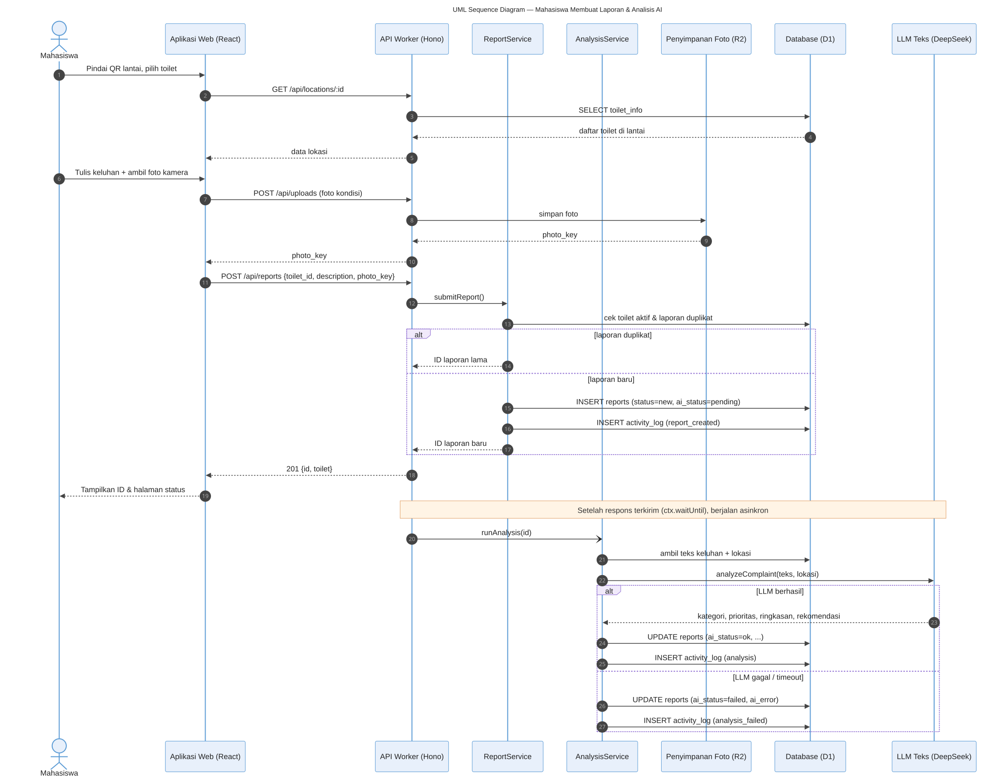
| Langkah | Apa yang terjadi |
|---|---|
| 1–5 | Mahasiswa memindai QR. Aplikasi meminta daftar toilet di lantai itu ke server; server mengambilnya dari basis data dan mengirimkannya kembali. |
| 6–10 | Mahasiswa menulis keluhan dan memotret. Foto dikirim lebih dulu ke server, yang menyimpannya di penyimpanan foto dan membalas dengan “kunci” foto. |
| 11–13 | Aplikasi mengirim laporan (toilet, keluhan, kunci foto). Server meneruskannya ke bagian ReportService, yang memeriksa toiletnya aktif dan laporannya bukan kiriman ganda. |
| 14 | Cabang “laporan duplikat”: nomor laporan lama dikembalikan; tidak ada laporan baru. |
| 15–17 | Cabang “laporan baru”: laporan disimpan dengan status baru dan analisis menunggu, dicatat di log aktivitas, lalu nomornya dikembalikan. |
| 18–19 | Mahasiswa melihat nomor laporannya. Bagi mahasiswa, urusan selesai di sini. |
| 20–22 | Setelah jawaban terkirim, server memerintahkan AnalysisService bekerja (panah berkepala terbuka menandakan “jalankan, tidak perlu ditunggu”). Teks keluhan diambil lalu dikirim ke LLM Teks. |
| 23–25 | Bila AI berhasil: kategori, prioritas, ringkasan, dan rekomendasi disimpan; status analisis menjadi ok; dicatat di log. |
| 26–27 | Bila AI gagal atau terlalu lama: status analisis menjadi gagal beserta pesan kesalahannya; dicatat di log. Laporan tetap aman dan bisa dianalisis ulang. |
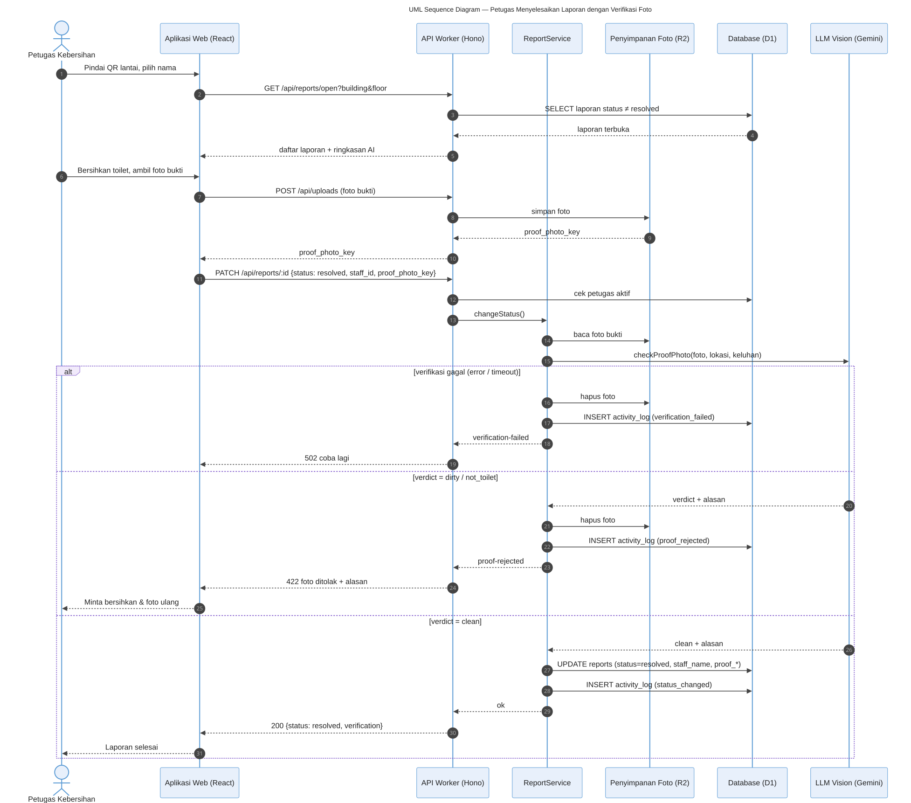
| Langkah | Apa yang terjadi |
|---|---|
| 1–5 | Petugas memindai QR lantai dan memilih namanya. Aplikasi meminta laporan yang belum selesai di lantai itu; server mengambilnya dari basis data dan menampilkannya bersama ringkasan AI. |
| 6–10 | Petugas membersihkan toilet lalu memotretnya. Foto bukti diunggah dan disimpan; server membalas dengan kunci foto. |
| 11–13 | Aplikasi meminta status diubah menjadi selesai dengan kunci foto dan identitas petugas. Server memastikan petugas itu terdaftar dan aktif, lalu meneruskan ke ReportService. |
| 14–15 | ReportService membaca foto dan mengirimnya ke LLM Vision bersama lokasi dan keluhan asli, sehingga AI tahu apa yang harus diperiksa (misalnya: keluhannya genangan, apakah lantainya sudah kering?). |
| 16–19 | Cabang “verifikasi gagal” (layanan AI error atau terlalu lama): foto dihapus, kejadian dicatat, petugas diminta mencoba lagi (kode 502). Petugas tidak perlu membersihkan ulang. |
| 20–25 | Cabang “kotor / bukan toilet”: AI mengembalikan penilaian dan alasannya. Foto dihapus, penolakan dicatat, dan petugas melihat pesan seperti “Toilet pada foto masih terlihat kotor. Bersihkan lagi, lalu foto ulang” (kode 422). |
| 26–31 | Cabang “bersih”: status menjadi selesai, beserta nama petugas, waktu selesai, dan data bukti. Perubahan dicatat di log, dan petugas melihat konfirmasi. Sejak saat itu foto bukti tampil di papan laporan publik dengan tanda terverifikasi. |
Semua diagram menceritakan sistem yang sama dari sudut berbeda. Tabel berikut menunjukkan di mana satu kegiatan muncul di setiap diagram, sehingga pembaca bisa berpindah dari satu diagram ke diagram lain.
| Kegiatan | Use Case | DFD | Class | Sequence |
|---|---|---|---|---|
| Membuat laporan | Buat Laporan | Proses 2.0 (2.1–2.3) | Report, Toilet, User | Gambar 14, langkah 1–19 |
| Analisis AI keluhan | Analisis Keluhan (AI) | Proses 3.0 (3.2–3.4) | Report (atribut AI), AiStatus | Gambar 14, langkah 20–27 |
| Menyelesaikan laporan | Selesaikan Laporan + Verifikasi Foto Bukti | Proses 4.0 (4.1–4.4) | Report (atribut proof), ProofVerdict | Gambar 15 |
| Kerja rutin petugas | Catat Pekerjaan | Proses 5.0 | WorkLog | (mirip Gambar 15) |
| Ringkasan harian | Buat Ringkasan Harian | Proses 6.0 | DailySummary | — |
| Chatbot data | Tanya Data (AI) | Proses 9.0 | (membaca Report, DailySummary) | — |
| Jejak audit | Lihat Log Aktivitas | D6, proses 8.3 | ActivityLog | Setiap “INSERT activity_log” |
canResolve(), Gambar 15).| Istilah | Arti sederhana |
|---|---|
| Aktor / Entitas eksternal | Pihak di luar sistem yang memakai atau berhubungan dengan sistem. |
| AI / Kecerdasan buatan | Program komputer yang bisa “memahami” teks atau gambar dan memberi penilaian. |
| Asinkron | Dikerjakan di belakang layar tanpa membuat pengguna menunggu. |
| Balancing | Aturan DFD: aliran data di level rinci harus sama dengan di level induknya. |
| Basis data (database) | Tempat penyimpanan data yang terstruktur, seperti lemari arsip digital. |
| Cookie / Sesi | “Tiket masuk” kecil yang disimpan peramban (browser) supaya pengguna tidak perlu login berulang kali. |
| Cron / Penjadwal | Pengatur waktu yang menjalankan tugas otomatis pada jam tertentu. |
| Dashboard | Halaman ringkasan untuk memantau keadaan, berisi daftar, angka, dan grafik. |
| Data store | Tempat data disimpan (di DFD digambar dua garis sejajar). |
| Hash | Pengacakan satu arah. Kata sandi diubah menjadi kode yang tidak bisa dikembalikan ke aslinya. |
| Kunci foto (photo key) | Nama unik berkas foto di penyimpanan, dipakai untuk merujuk foto itu. |
| LLM | Large Language Model: jenis AI yang memahami dan menghasilkan bahasa. |
| Log | Catatan kejadian berurutan waktu. |
| Prompt | Instruksi dan bahan yang dikirim ke AI. |
| QR code | Kotak berpola yang bisa dipindai kamera ponsel untuk membuka halaman tertentu. |
| Query agregat | Perintah untuk menghitung rekap data (jumlah, rata-rata) tanpa menampilkan data satu per satu. |
| R2 bucket | Layanan penyimpanan berkas milik Cloudflare, tempat foto disimpan. |
| Server | Komputer di internet yang menjalankan aplikasi dan melayani permintaan dari ponsel pengguna. |
| UML | Unified Modeling Language: bahasa gambar standar untuk merancang perangkat lunak. |
| Verdict | Putusan atau penilaian AI atas foto: bersih, kotor, atau bukan toilet. |
| WIB | Waktu Indonesia Barat; semua jam di sistem memakai zona waktu ini. |
docs/diagram/src/: DFD dalam format
Graphviz (.dot), diagram class dan sequence dalam format Mermaid (.mmd), dan
use case sebagai skrip Python. Gambar siap pakai (PNG dan SVG) ada di docs/diagram/.